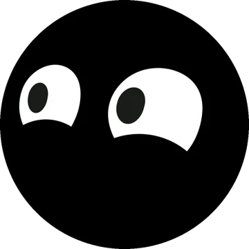
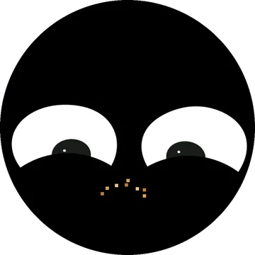
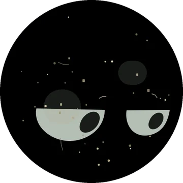
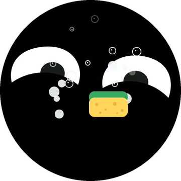
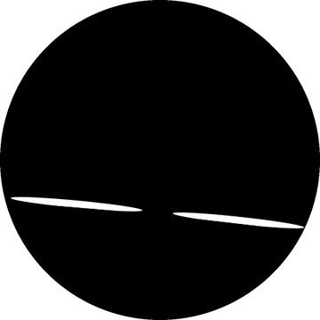
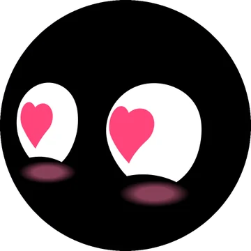
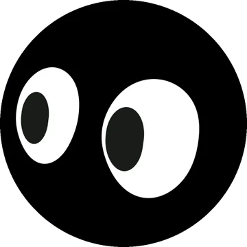
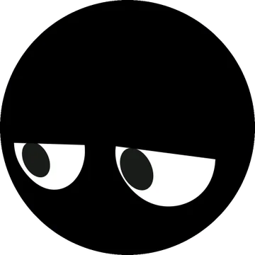
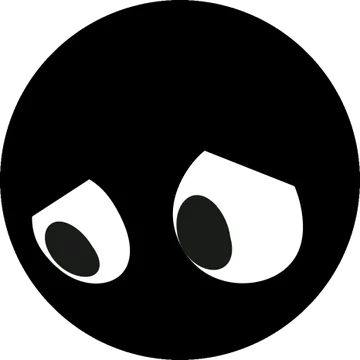
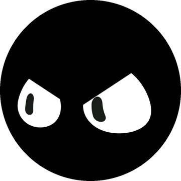

Этот браузер несовместим с брелоком. Используй Google Chrome или Microsoft Edge
Прошивка устарела. Обнови её, чтобы открыть настройки. Питомец и настройки сохранятся
Пип не подключён
Кабелем USB-C или по Bluetooth. Настройки брелока появятся здесь, а изменения уйдут в него по кнопке «Применить изменения»
Возраст—
Батарея—
Прошивка—
Глаза Пипа
Слева цвет зрачка, справа — цвет вокруг него
Характер Пипа
Как часто Пипа нужно кормить, выгуливать и развлекать. Меняется только здесь
Болтливость
Как часто Пип говорит сам с собой и с тобой
Неловкие звуки
Чихает, рыгает и пукает сам по себе. Выключи то, что не нравится
Экран и батарея
Ранний сон и низкая яркость берегут заряд
Яркость
Засыпает, если его не трогать
Автояркостьтусклее при низком заряде
Энергосбережениеменьше кадров, микрофон и музыка выключены
Оформление и звук
Тема меняет меню и приложения, сам Пип не меняется
Голос Пипазвуки, которые издаёт Пип
Звуки менющелчки, таймер, звонок
Уведомления с телефона
Что показывать на экране брелока
Звонкивходящий звонок появится на брелоке: ответить или отклонить
На Android музыка и уведомления работать не будут
Чтобы подключить брелок, открой на телефоне «Настройки» → Bluetooth → Pip и подтверди код верхней кнопкой
Что Пип замечает
Отключи то, что мешает
Перетаскивай строки за ручку слева: блоки меняются местами, приложения переходят из блока в блок или в главное меню. Нажми на название, чтобы переименовать
Обновить или прошить Пипа
Подключи кабельUSB-C с передачей данных, а не «только для зарядки»
Выбери действие«Обновить» или «Прошить начисто», затем в списке — USB JTAG/serial
Подожди минутуНе отключай кабель, пока полоска не заполнится
Обновить прошивку
✓Данные сохранятся
Новая версия поверх старой. Питомец, настройки, цвет глаз и сопряжение с телефоном остаются
Прошить начисто
✕Всё сотрётся
Как с завода: новый питомец, настройки по умолчанию, сопряжения, история и лог батареи удаляются. Помогает, если что-то сломалось
Не получается?
Брелока нет в списке — попробуй другой кабель или USB-порт. В Linux один раз выполни
sudo usermod -aG dialout $USER и войди в систему заново
Прошивка не начинается — зажми нижнюю кнопку, коротко нажми верхнюю и отпусти нижнюю. Брелок перейдёт
в режим прошивки, нажми «Обновить» ещё раз
Симулятор
Пип в браузере: брелок в 3D, все приложения и эмоции
Попробуй Пипа без брелока: покорми, погладь, поиграй и посмотри все приложения. Откроется в новой вкладке
Таблица эмоций
Все эмоции Пипа с картинками и тем, как их вызвать
С поиском и фильтрами: хорошие, плохие, автоматические и редкие. Откроется в новой вкладке
Отладка
Дерево эмоций, история за сутки, любая эмоция и настройки правил
Откроется в новой вкладке. Брелок на кабеле она подключит сама, по Bluetooth — нажми там «По Bluetooth»
Режим разработчика
Служебная информация поверх Пипа
Каркас глаз, взгляд, области перерисовки и счётчики прямо на экране брелока
Лог батареи
Сколько держит заряд
Раз в минуту Пип записывает заряд, памяти хватает примерно на 17 часов. Заряди до 100%, отключи кабель и дождись, пока сядет, а потом подключи его сюда
Оба проекта открыты и распространяются по лицензии MIT: код можно свободно использовать, менять и распространять, сохраняя уведомление об авторских правах
Мелодия «Happy Birthday to You», которую Пип поёт в день рождения владельца, находится в общественном достоянии

Знакомство
Это Пип
Пип — маленький питомец, который живёт в брелоке. У него есть только глаза, но по ним видно всё: голоден ли он,
устал, заскучал или просто рад тебя видеть. Корми его, гуляй с ним, гладь и играй — и он ответит тем же.
Первая встреча. Новый Пип ещё не родился, и экран тёмный. Нажми любую кнопку: в темноте
загорится искра, к ней слетится звёздная пыль, вспышка — и вот он открывает глаза. Такое бывает только
один раз. С этой минуты начинается его жизнь.
Управление
Кнопки и жесты
Пип чувствует всё: касания, движения брелока и даже твоё дыхание. На одно и то же он отвечает
по-разному — смотря какое у него настроение.
Кнопки
ВерхняяОткрывает меню и выбранную строку. Если подержать несколько секунд, брелок выключится.
НижняяНажми — поздороваться, подержи — покормить, нажми и сразу подержи — помыть. В меню и приложениях это «назад».
Назад жестомПроведи пальцем от правого края экрана влево — как нажать нижнюю кнопку.
Сразу к ПипуДважды быстро нажми нижнюю кнопку — из любого приложения попадёшь прямо к нему.
Несколько нажатий подряд
1привет
2–6щекотно
7–9«хватит!»
10голова кругом
Так терпит Уравновешенный Пип. Неприхотливый смеётся дольше, а Требовательный быстрее устаёт
от щекотки и может всерьёз разозлиться. Четыре медленных ровных нажатия — уже не щекотка, а ритм: об этом
в разделе «Игры с Пипом».
Касания
ТыкЛёгкий тычок. Попадёшь в глаз — Пип его зажмурит.
По носуТыкни ровно между глаз — Пип скосит их к носу и фыркнет, хихикнет или чихнёт.
ПогладитьПроведи пальцем по экрану. Это лучший способ сказать, что ты его любишь, а долгая ласка его растрогает.
По макушкеГладь у верхнего края экрана — Пип зажмурится и подставит голову.
ЩекоткаБыстро потри пальцем одно место — Пип расхохочется.
СпиральНарисуй на экране круги — глаза Пипа закружатся следом, а потом у него поплывёт голова.
Закрыть глазаМедленно проведи сверху вниз по глазам: сонный Пип уснёт, а бодрый откроет их обратно.
РазбудитьПроведи снизу вверх по спящему Пипу — он нехотя проснётся и поворчит.
ЩёчкиПод глазами. Тыкни — Пип смутится и покраснеет, погладь — прильнёт к пальцу.
ПодбородокПочеши внизу, посередине — Пип задерёт голову и блаженно зажмурится.
Тык в бокУ самого края слева или справа. Пипу щекотно, и он отпрыгивает.
Палец на глазуПодержишь палец на глазу — Пип зажмурится и возмутится, а если не отпускать, рассердится.
Растянуть глазаПоставь два пальца на оба глаза и разведи в стороны — глаза поползут за пальцами. Отпусти — схлопнутся с «бои-оинг».
Свести глазаДва пальца на глаза — и сведи их вместе: глаза съедутся к носу и закосят. Отпустишь — разлетятся обратно.
Два пальцаПоложи два пальца где-нибудь не на глаза — у Пипа глаза разбегаются: он не знает, на какой смотреть.
ЛадоньНакрой экран ладонью — Пипа сплющит. Убери руку — он выпрыгнет обратно и отряхнётся. Это тоже игра в прятки.
Движения
ПотрястиСлегка и недолго — может развеселиться. Сильно или долго — у него закружится голова, а если продолжать, его укачает.
КачелиПокачай брелок из стороны в сторону — Пип будет в восторге.
Экраном внизПип засыпает, и экран гаснет. Перевернёшь через секунду — это игра в прятки.
КувырокНесколько раз быстро переверни брелок — Пип закувыркается от восторга. Не переусердствуй: голова закружится.
Уронить или броситьПип испугается и обидится. Погладь его — и он простит.
Вверх ногамиПипу так неуютно. Переверни обратно — и он с облегчением выдохнет.
ПрогулкаБрелок сам считает шаги. Просто носи Пипа с собой.
Звуки
ПодутьПип зажмурится от ветра. Мокрого после мытья это высушит, а если дуть слишком долго, он замёрзнет.
Громкий хлопокПип пугается хлопка или стука рядом. Испуг пройдёт сам, а если погладить — сразу.
МузыкаВключи песню рядом или на iPhone — если Пип в настроении, он пустится в пляс.
Когда не нравитсяЛюбую из этих реакций можно отключить на панели: «Настройки» → «Что Пип замечает».
Уход
Что ему нужно
Шесть потребностей понемногу убывают сами. Посмотреть их можно в меню, в строке Пип: там же
видно, сколько ему дней и сколько шагов он прошёл сегодня.
НастройОбщее самочувствие. Сытый, отдохнувший и обласканный Пип доволен.
ЕдаПодержи нижнюю кнопку — упадёт печенье.
ЭнергияСон, лучше всего экраном вниз.
ВесельеИгры, особенно с самим Пипом.
ВниманиеЛаска и время, проведённое вместе.
ПрогулкиНоси брелок с собой.
ЧистотаНажми нижнюю кнопку и сразу подержи.
ДовериеРастёт от заботы и падает от грубости.

Печенье

Пора помыть

Мытьё

Сладкий сон
Не перекормиСытому Пипу от печенья станет нехорошо, а потом он и вовсе откажется есть.
После мытьяПип мокрый и капает. Подуй на него — он высохнет и довольно фыркнет.
Чистого не мойНемного пыльного мыть можно — ему приятно. А совсем чистый возмутится, и если мыть его два раза подряд, в третий раз просто не дастся. Отмылся — отпусти кнопку: тереть дальше ему надоест.
Грязь и простудаЕсли долго не мыть, Пип заболеет. Замёрзнет мокрым — тоже. Помой и согрей — и через несколько часов он поправится.
ИкотаПосле печенья или долгого смеха Пип иногда икает. Лучшее средство — напугать его.
КонфузыПосле еды Пип может рыгнуть, а то и пукнуть. Потом ему неловко, а иногда, наоборот, смешно. Чихать, рыгать и пукать можно запретить в «Неловких звуках» под «Болтливостью».
Характер
Каким будет твой Пип
Характер решает, сколько заботы нужно Пипу. Выбирается он только на панели и меняется в любой момент.
Неприхотливый
печенье раз в день
короткие прогулки
легко обыграть
дольше всех держится без еды
Уравновешенныйпо умолчанию
печенье два раза в день
прогулка каждый день
иногда просит поиграть
играет в полную силу
Требовательный
часто хочет есть
долгие прогулки и игры
спит только экраном вниз
обыграть его трудно
Эмоции
Настроение
У Пипа десятки эмоций, и он сам решает, какую показать. Настроение у него не скачет: грусть
без причины не сменится радостью в один миг, он придёт к ней постепенно.
Радость

Любовь

Любопытство

Сонливость

Грусть

Злость
Откуда оно берётся
НуждыГолодный злится, уставший клюёт носом, одинокий грустит, а грязный морщится.
СобытияПобеда, испуг, вкусное печенье или обида ещё долго видны по глазам.
Его деньОдно утро выдаётся удачным, другое — не очень, а к вечеру Пип успокаивается.
Сам по себе
Когда его никто не трогает, Пип живёт своей жизнью: оглядывается, зевает, напевает, мечтательно смотрит вдаль,
что-то хитро замышляет, закатывает глаза, поёт, следит за бабочкой, надевает очки, жонглирует, показывает фокусы, ночью смотрит на звёзды или считает овец, а иногда прикидывается спящим, чтобы тебя разыграть. На прогулке он хвастается силой: достань его из кармана — и он поднимет штангу. Бывает, он
задумается — и его осенит: «Ага!» Когда ты рядом, он любуется тобой или нетерпеливо ждёт, когда же вы поиграете.
А ещё Пип болтает: довольный весело лопочет, сердитый ворчит под нос, а в шутливом настроении дразнится
«бе-бе-бе». Сколько он говорит, выбирается на панели: Тихоня, Обычный или Болтун.
Особые дни
Редкие состоянияИзредка Пип влюбляется, мёрзнет, перегревается, чихает от аллергии или бродит зомби. Что случится — зависит от времени года и того, как прошёл его день.
Твой день рожденияУкажи дату на панели в «Что Пип замечает» → «Дни рождения». В этот день Пип споёт тебе, устроит хлопушки и будет праздновать до вечера.
Веселье
Игры с Пипом
Веселее всего Пипу играть с тобой. Но уставший, сонный или обиженный Пип играть не станет: вместо
игры появится «Пип устал».
ДогонялкиВоди пальцем по экрану, не останавливаясь, — Пип начнёт прыгать за ним и ловить.
РитмПростучи нижней кнопкой четыре ровных удара. Пип ответит своим ритмом, а ты повтори.
Пинг-понгИгра до пяти очков. Когда Пип ведёт, он начинает поддаваться.
Повтори за мнойПип смотрит в разные стороны и поёт по ноте, а ты повторяешь свайпами или касаниями. Запомнишь длинную цепочку — победа твоя.
Крестики-ноликиУ каждого только три знака: четвёртый стирает самый старый. Можно играть и с другом.
Кто победилПип радуется победе и грустит, проиграв. Если обыгрывать его раз за разом, он расстроится всерьёз.
Насколько трудно обыграть Пипа, зависит от его характера.
Вместе
Отношения
Любовь и веселье Пипа держатся только на твоём внимании. Всё, что ты делаешь с брелоком, идёт
в счёт: ласка, игры, еда, даже монетка или змейка.
Сколько внимания нужноНеприхотливому хватает минут пяти в день, Уравновешенному — 10–15, Требовательному — 20–25. Новорождённому первые дни чуть больше.
ДовериеКопится неделями. Того, кого гладят и вовремя кормят, ждёт смелость: он сам будет здороваться. Того, кого бросают и будят, — пугливость.
ОбидаЗлость проходит не сразу. Пока Пип не остыл, он может отказаться от еды, мытья и игр.
Как помиритьсяГладь его долго, не отпуская. Сначала он дуется, потом смущается и наконец тает.
РевностьЕсли всё внимание достаётся телефону, Пип может надуться. Погладь его.
Плохая ночьЕсли уведомления всю ночь не давали спать, утром Пип проснётся сердитым.
Важно
Если о Пипе забыть
Без сна, игр или мытья Пипу плохо, но не смертельно. А вот если его несколько дней не кормить, он
умрёт. На экране останется надпись и число прожитых дней, а брелок перестанет откликаться.
Неприхотливый продержится около трёх суток, Уравновешенный — двое, Требовательный — чуть больше
одних. Обновление прошивки Пипа не вернёт: завести нового можно только через «Прошить начисто».
Меню
Приложения
Меню — это колесо из слов: листай его пальцем и открывай строку посередине верхней кнопкой. Первая
строка, Пип, — его шкалы, возраст и шаги. Пока ты в меню или приложении, Пип отдыхает: молчит и не замечает тряски.
Игры
Крестики-ноликиС Пипом или с другом.
Пинг-понгС Пипом, до пяти очков.
Повтори за мнойЗапомни мелодию Пипа.
ЗмейкаСвайп или касание сбоку поворачивает. Верхняя кнопка — пауза.
Flappy PipКасание подбрасывает глаза Пипа. Пролетай между колоннами.
ШарикНаклоняй брелок и собирай сердечки, не задевая край.
ЛабиринтНаклонами докати шарик до цели.
Шар предсказанийЗадай вопрос и встряхни.
МонеткаВстряхни: орёл или решка?
КубикВстряхни и брось.
Пока идёт игра, экран не гаснет, даже если ты только наклоняешь брелок.
Утилиты
ЧасыВремя и дата приходят с iPhone или с панели.
ТаймерПрозвенит, даже если из него выйти.
СекундомерВерхняя кнопка — старт и круг, касание — пауза, нижняя — сброс.
ШумомерПокажет, насколько вокруг шумно.
ФонарикПроведи пальцем вбок, чтобы сменить яркость.
Телефон
УведомленияПоследние десять сообщений.
МузыкаПауза и треки на iPhone.
КамераКнопка брелока делает снимок на телефоне.
ЛокаторПоможет найти телефон поблизости.
Подробнее — в разделе «Телефон».
Настройки
ЗвукиГромкость голоса Пипа и меню, отдельно.
ТемыОформление меню и приложений.
ЯркостьНажми на шкалу — экран станет ярче или темнее.
ГлазаДесять цветов на выбор.
ПриватностьЧто показывать в уведомлениях и нужны ли звонки.
BluetoothПодключённые устройства: переподключить или забыть.
Темы
МенюСтандартнаячёрная с оранжевым
> МЕНЮ_Ретротерминал из клеток
МенюБарбирозовая, рукописная
Тема меняет меню и приложения, а Пип остаётся собой. Порядок строк и их названия можно поменять
на панели, в «Меню брелока».
Связь
Телефон
1На телефоне открой «Настройки» → Bluetooth и выбери Pip
2Сверь код на экранах и нажми «Подтвердить» на брелоке
3Готово: дальше брелок будет подключаться сам
УведомленияВыезжают сверху на пару секунд. Коды, пароли и сообщения банков брелок не показывает.
ЗвонкиВерхняя кнопка — ответить, нижняя — отклонить.
МузыкаУправляй песнями на iPhone. Под музыку из телефона Пип тоже танцует.
КамераОткрой камеру на телефоне и «Камеру» на брелоке — снимок по верхней кнопке.
ЛокаторХоди с брелоком: подсказки «теплее» и «холоднее» и всё более частый писк приведут к телефону.
ПриватностьТекст сразу, по нажатию или вовсе без уведомлений. Звонки отключаются там же.
Android тоже подключается, но уведомления и музыка с ним не работают. Камера и локатор —
работают, а время брелок узнает от панели.
Пока Пип спит экраном вниз, уведомления и звонки его не тревожат.
Энергия
Экран и батарея
Сон экранаЕсли брелок не трогать, экран погаснет, а Пип задремлет. Через сколько — выбирается на панели.
ПробуждениеКоснись экрана или нажми кнопку. С «Просыпается от движения» хватит просто взять брелок в руку.
ЗарядкаПип ей радуется: бодрого будто бьёт молния, а уставший пьёт ток глотками. И понемногу наедается. Снимай его на 80–95% — ему это нравится.
Не держи на проводеПолному Пипу долго на зарядке плохо: он злится, а потом грустит. И не дёргай кабель туда-сюда. А если батарея сядет до нуля и он выключится, то проснётся голодным, уставшим и злым.
ЭнергосбережениеБрелок работает дольше, но Пип не слышит дуновения и музыки, а при тёмном экране не приходят уведомления.
АвтояркостьКогда батарея садится, экран сам становится темнее.
Когда батарея почти пуста, Пип устаёт. Совсем разряженный брелок выключится сам, сохранив Пипа.
Панель
Эта страница
Здесь настраивается всё, чего нет на самом брелоке: характер, сон экрана, что Пип замечает,
день рождения и меню. Отсюда же обновляется прошивка.
ПодключиКабелем USB-C или по Bluetooth — кнопками вверху страницы.
НастройМеняй что хочешь, а потом нажми «Применить изменения» внизу.
ОбновиКогда выйдет новая версия, панель сама предложит обновиться. Пип и настройки сохранятся.
Пока брелок подключён к панели, на нём горит «Режим настройки»: Пип не отзывается на кнопки и касания.
Нужен Chrome или Edge; на Android — только Bluetooth.
Помощь
Вопросы
Экран чёрный, и ничего не происходит
Скорее всего, Пип спит. Нажми любую кнопку.
Пип всё время злится или грустит
Открой в меню строку «Пип» и посмотри, какая шкала
опустела. Чаще всего ему не хватает еды, прогулки или ласки.
Пип не ест
Он сыт или обижен. Подожди немного, а обиженного погладь.
Вместо игры написано «Пип устал»
Пип устал, спит или обиделся. Дай ему отдохнуть, а если
обиделся — подольше погладь.
Пип не реагирует, когда на него дуют
Дуй прямо на брелок, ровно, пару секунд. Проверь на панели, что «Дуновение» включено, а энергосбережение — нет.
Часы пишут, что время не синхронизировано
Брелок выключался и забыл время. Подключи
iPhone по Bluetooth или открой эту панель — время установится само.
Как выключить брелок?
Подержи верхнюю кнопку несколько секунд.
Что сохранится после обновления?
Всё: сам Пип, настройки, меню и связь с телефоном.
Стереть всё может только «Прошить начисто».
Пип умер. Его можно вернуть?
Этого Пипа — нет. Но «Прошить начисто» подарит тебе нового.